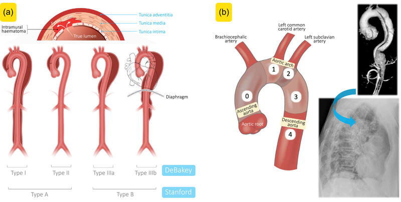
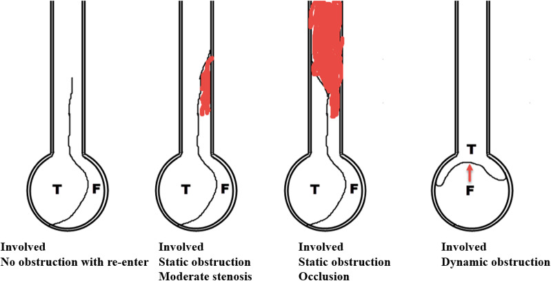
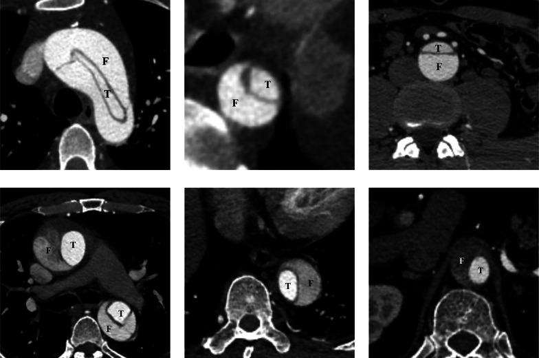

疾病 心臟
Aortic dissection ｜ 主動脈剝離 · Aortic Dissection 筆記更新 2026-07-27· 整理狀態：可用
加入閱讀清單 其他名稱 9 AD · AAD · 主動脈剝離 · 急性主動脈剝離 · Acute aortic dissection · Aortic Dissection · Stanford A · Stanford B · DeBakey
一句話總覽
主動脈內膜撕裂後，血液衝進中層形成假腔 並沿血管縱向延伸——所有臨床表現都只是「假腔壓迫或撕斷了哪一條分支 」。分型只問一件事：有沒有侵犯升主動脈？ 有（Stanford A）→ 緊急外科；沒有（Stanford B）→ 先把心率與血壓壓下來。
30 秒行動卡
診斷關鍵 ：突發、發作瞬間就衝到最痛 的胸／背撕裂痛 ＋ 兩臂收縮壓差 ＞20 mmHg 或新出現的舒張期雜音 → 胸主動脈一律做 CTA ；血行動力不穩、不能離開急診 → 床邊 TEE
治療骨架 ：止痛 → 先靜脈 β-blocker 把心率壓到 60 bpm 附近，再加血管擴張劑把收縮壓降到 <120 mmHg（順序不可顛倒） → Stanford A 一律緊急外科 ；Stanford B 無併發症先藥物、有併發症才介入（TEVAR）
絕對不可 ：先給純血管擴張劑（反射性心搏過速會加速撕裂）；未排除剝離就抗凝／溶栓；A 型合併填塞時做大量心包穿刺
定義與定位
這個病是什麼？在分類樹的哪個位置？跟隔壁的病靠什麼分開？
內膜撕裂後，血液進入主動脈中層 ，真腔與假腔並存並沿血管縱向延伸 。高峰 60–70 歲、男性居多；40 歲以下發病要往遺傳性主動脈病變想 。它是「急性主動脈症候群」三兄弟之一——典型剝離 、壁內血腫（IMH, intramural hematoma） 、穿透性主動脈潰瘍（PAU, penetrating atherosclerotic ulcer） ；三者的分型原則與急性處置骨架相同。時間軸 ：超急性 ＜24 小時｜急性 1–14 天｜亞急性 15–90 天｜慢性 ＞90 天。
分型
分型直接決定「開不開刀」，所以要先分型再談別的。
項目
Stanford A Stanford B
定義
侵犯升主動脈 （不論撕裂起點在哪）只侵犯左鎖骨下動脈開口以遠 ，升主動脈未受累
對應 DeBakey
I ：起於升主動脈、延伸過弓部到降主動脈以下；II ：侷限在升主動脈 III ：起於左鎖骨下動脈以遠；IIIa 止於橫膈以上、IIIb 延伸到橫膈以下
比例
約 2/3
約 1/3
疼痛位置傾向
較常在前胸
較常在背部／肩胛間
招牌併發症
心包填塞、急性主動脈瓣逆流（AR, aortic regurgitation）、冠脈受累、中風
腸缺血、腎缺血、下肢缺血、截癱
處置
緊急外科手術 無併發症先藥物；有併發症才介入
分型只問「有沒有侵犯升主動脈」
不是問撕裂起點在哪。 起點在降主動脈、但逆行撕到升主動脈 → 仍然是 Stanford A ，仍然要開刀。
這一句可以解掉所有分型題，也解釋了為什麼 DeBakey I 與 II 都歸在 Stanford A。

Stanford 看「升主動脈有沒有受累」；DeBakey 則同時考慮起點與延伸範圍。圖中 I、II 都屬 Stanford A，IIIa／IIIb 都屬 Stanford B；B 型的近端界線在左鎖骨下動脈開口遠端。Source: Chung et al., Eur Heart J Cardiovasc Imaging 2024, Figure 1 （CC BY 4.0）。
病因與機制
flowchart TD
A["中層退化<br/>＋管壁剪應力"] --> B["內膜撕裂"] --> C["血液進入中層<br/>形成假腔"] --> D["假腔向前後延伸"]
D --> E["壓迫分支開口<br/>器官缺血"]
D --> F["逆行撕至主動脈根部"] --> H["急性瓣膜逆流<br/>心包填塞"]
D --> G["外膜破裂"] --> I["失血性休克"]
classDef key fill:#8e0000,stroke:#5f0000,color:#fff,font-weight:bold
classDef dark fill:#263238,stroke:#000,color:#fff,font-weight:bold
class H,I key
class D dark
筆記中的流程與關係 一句話推出全部處置
撕裂會不會繼續延伸，取決於左心室射血打在內膜上的剪應力（dP/dt），不是單純的血壓數字。
所以：心率↓、收縮力↓、血壓↓ 三者都是好事；任何讓心跳變快的動作都是壞事。這句話直接推出「為什麼要先給 β-blocker」。

分支灌流不良的兩種機制：static obstruction 是剝離延伸進分支、即使壓力改變仍狹窄；dynamic obstruction 是假腔壓力把 intimal flap 推向分支開口而間歇阻塞。臨床上同一機制可發生在冠脈、頭臂、肋間、腸繫膜、腎與髂動脈。Source: Zhang et al., Insights Imaging 2025, Figure 12 （CC BY-NC-ND 4.0）。
危險因子
類別
具體項目
備註
血流動力 高血壓 （最重要，IRAD／International Registry of Acute Aortic Dissection 中約 7 成 病人有）；古柯鹼 、安非他命等擬交感神經藥古柯鹼是年輕病人一定要問的一條病史
主動脈結構異常 雙葉主動脈瓣 （見 Bicuspid aortic valve↗ ）、既有胸主動脈瘤、主動脈狹窄（coarctation）、Turner syndrome雙葉瓣的主動脈病變獨立於瓣膜狹窄的嚴重度 ，瓣膜不狹窄也會有
遺傳性結締組織病 Marfan syndrome （FBN1）、血管型 Ehlers–Danlos （COL3A1）、Loeys–Dietz syndrome、家族性胸主動脈瘤／剝離見 Marfan syndrome↗
發炎性主動脈炎 Takayasu 動脈炎、巨細胞動脈炎、梅毒性主動脈炎
醫源性／外傷 心導管與主動脈內器械操作、主動脈內氣球幫浦、心臟手術、高速減速傷
生理狀態 懷孕 ：多集中在第三孕期、生產過程與產後數週至 3 個月內 血量、心輸出與荷爾蒙對管壁的作用同時上升
臨床表現
典型病人長什麼樣？哪些症狀是幾乎一定有、哪些是提示性的？
典型 ：突發、發作瞬間即達到最痛 的胸痛或背痛，性質為撕裂樣、刀割樣。「痛在幾秒內衝到頂點」比「痛的性質」更有鑑別力提示性 ：疼痛會遷移 （代表撕裂正在延伸）、就診時嚴重高血壓、冒冷汗、強烈瀕死感少見但重要 ：完全不痛 （約 5% ），改以暈厥、中風、突發下肢無力、腹痛或休克表現——這一群最容易被延誤
疼痛位置只是「傾向」，不是規則
前胸痛較常對應升主動脈（A 型）、肩胛間背痛較常對應降主動脈（B 型）；但兩者可以並存，也會隨撕裂延伸而遷移。決定嚴重度的是解剖分型與有沒有併發症，不是痛在前面還是後面 ——不要把「背痛比前胸痛更危險」記進去，A 型（較常前胸痛）才是死亡率最高、必須立刻開刀的一群。
→ 相關主訴流程：Chest pain↗ （Workup）
撕到哪裡，就出現哪個併發症
剝離的每一個併發症都只是「假腔壓迫或撕斷了某一條分支」——把分支列一遍，表現就推得出來，不必背。
受累的分支／結構
臨床表現
床邊怎麼抓
冠狀動脈開口 （右冠最常見 ）急性心肌梗塞，以下壁居多 心電圖下壁 ST 上升——與單純 STEMI 無法區分 （見 EKG ischemia ）
主動脈瓣環 急性主動脈瓣逆流 → 急性肺水腫、心因性休克
新出現的舒張期漸弱雜音 （IRAD：A 型約 44% ）
心包腔 （逆行破入）心包積血 → 心包填塞
頸靜脈怒張＋低血壓＋心音遙遠（Beck 三徵）；見 Cardiac tamponade
無名動脈／左總頸動脈 中風 、意識改變突發局部神經學缺損＋胸背痛
無名動脈／左鎖骨下動脈 單側上肢脈搏減弱或消失 兩臂收縮壓差 ＞20 mmHg
脊髓動脈 （肋間動脈、Adamkiewicz）脊髓缺血 → 下肢癱瘓 、感覺平面
突發截癱＋背痛（很容易被當成脊椎問題）
腸繫膜動脈 腸缺血 腹痛程度遠大於理學檢查發現、乳酸上升
腎動脈 急性腎損傷 、腎梗塞、頑固性高血壓少尿、Cr 上升、腰痛、血尿（會像腎絞痛）
髂／股動脈 下肢缺血
下肢脈搏消失、蒼白冰冷
喉返神經／交感神經鏈 （局部壓迫）聲音沙啞、Horner syndrome
少見但很有指向性
外膜破裂 破入心包／左胸腔／縱膈 → 失血性休克
突然的低血壓；見 Shock
理學檢查
項目
意義
一定要知道的但書
四肢血壓（至少兩側上肢一起量）＋脈搏對稱性 兩臂收縮壓差 ＞20 mmHg 或脈搏短絀（pulse deficit）提示分支受累
出現率低 （IRAD 整體約 15% ）；沒有壓差完全不能排除剝離
新出現的舒張期漸弱雜音 （AR）撕到瓣環，提示 A 型
急性 AR 的雜音又短又輕 ，很容易漏聽；也常沒有慢性 AR 的寬脈壓，見 Cardiac auscultation
頸靜脈怒張 ＋ 低血壓 ＋ 心音遙遠
心包填塞 剝離情境下看到頸靜脈怒張，先想填塞 ，不是上腔靜脈症候群
神經學檢查
中風、截癱、Horner syndrome、聲音沙啞
別把突發截癱只當脊椎問題
血壓
多數為高血壓
低血壓要立刻想到填塞、破裂或重度 AR ；也要排除假性低血壓 ——量到的那隻手正好是被撕到的分支
診斷
影像選擇
工具
最擅長
盲點／限制
什麼時候用
CTA （computed tomography angiography）全段主動脈；看得到內膜瓣、真假腔、壁內血腫、分支受累與破裂徵象；測直徑最準 、快速可及
輻射、顯影劑腎損傷；病人必須能離開急診
穩定病人一律首選 （見 Chest CT↗ ）
TEE （transesophageal echocardiography）升主動脈近端、胸降主動脈、心包積液、AR 嚴重度；床邊就能做
主動脈弓遠端有氣管遮擋的死角 ；看不到腹主動脈；需鎮靜血行動力不穩、不能搬離急診或開刀房 的病人
MRA （magnetic resonance angiography）影像品質最佳、無輻射
慢、可及性差、掃描中難以監測與急救
穩定病人的長期追蹤 ；年輕人與需反覆追蹤者
「超音波看不到主動脈」是錯的——錯在種類與部位
體表（經胸／經腹）超音波被肺內空氣與胸骨、肋骨擋住，看不好主動脈弓與胸降主動脈 ；它真正擅長的是腹主動脈 （腹主動脈瘤篩檢的首選就是腹部超音波）。要在床邊看胸段，就把探頭放進食道——這就是 TEE 。同一句敘述換一個工具或換一個部位，對錯就會翻面。TTE （transthoracic echocardiography）在剝離情境的角色是床邊第一時間找心包填塞與 AR ，不能用來排除剝離 （見 Echocardiography ）。
胸部 X 光可能看到什麼
徵象
內容
縱膈腔變寬 最常被提到的一項；但敏感度不足以拿來排除
calcium sign（鈣化分離徵） 內膜的鈣化被假腔往內推，與主動脈外緣明顯分開。特異但不常見
其他提示性徵象
主動脈輪廓異常、aortic knob 模糊、氣管或鼻胃管走向向右偏移；左側胸腔積液 （血液滲漏到左側胸腔）
D-dimer 的角色
只能用來「往下拿掉」，不能用來確診
假腔內大量血栓形成，D-dimer 常明顯升高；對急性主動脈症候群敏感度高、但特異度很差 ——肺栓塞、感染、術後、癌症、懷孕都會升高。切點的單位（FEU vs DDU）各實驗室不同，看報告時要確認
ADD-RS（Aortic Dissection Detection Risk Score）三個面向各給 1 分，總分 0–3 ：① 高危病史 （Marfan／結締組織病、家族主動脈疾病史、已知主動脈瓣疾病或胸主動脈瘤、近期主動脈操作）② 高危疼痛特徵 （突發、劇烈、撕裂／刀割樣，胸、背或腹痛皆算）③ 高危理學發現 （脈搏差或兩側血壓差、局部神經學缺損、新出現的 AR 雜音、低血壓或休克）。2–3 分直接送影像；1 分若找不到其他解釋就儘快送影像 唯一被前瞻驗證的排除規則：ADD-RS ≤1 且 D-dimer ＜500 ng/mL（FEU）可以安全排除 ；但臨床高度懷疑時，D-dimer 陰性不可用來取消 CTA ——壁內血腫、短節段或已血栓化的剝離都可能不升高

CTA 軸切的多種真假腔外觀：線狀 intimal flap 將管腔分成 T（true lumen）與 F（false lumen）。真腔常較小、較早顯影；假腔常較大、顯影較慢，但不能只靠大小判斷，仍要沿序列追蹤分支連續性與入口。Source: Zhang et al., Insights Imaging 2025, Figure 10 （CC BY-NC-ND 4.0）。
鑑別診斷
要排除的
支持它的線索
怎麼排除
ACS 疼痛逐漸 加重而非瞬間到頂、有典型冠心症危險因子、troponin 呈動態上升
兩者可以並存 ——A 型撕到冠脈開口本身就是 MI。只要有撕裂痛、兩臂血壓差、新雜音或縱膈變寬，先 CTA 再抗栓
Pulmonary embolism 呼吸困難與低血氧為主、單側下肢腫、右心負荷徵象
兩者 D-dimer 都會升高；CTA 一次可以分開
Cardiac tamponade （非剝離原因）病史不同；處置完全不同
超音波看到心包積液後，一定要再找有沒有內膜瓣與升主動脈擴大
食道破裂（Boerhaave）
劇烈嘔吐後、皮下氣腫、縱膈氣腫
胸部 CT／食道攝影
急性心包炎、氣胸、腸繫膜缺血、腎絞痛
各自的線索
見 Chest pain↗
治療
藥物：順序本身就是治療
步驟
藥物
目標
為什麼
① 止痛 靜脈嗎啡
讓病人不痛、不躁動
痛與焦慮 → 交感興奮 → 心率血壓上升。止痛本身就是在降 dP/dt
② 先降心率 靜脈 Beta blocker↗ esmolol （超短效，可隨時停掉，最適合待手術者）、labetalol （兼具 α 阻斷，降壓也有效）、metoprolol
心率壓到 60 bpm 附近 真正把主動脈撕開的是左心室射血的剪應力 dP/dt
③ 再降血壓 血管擴張劑：nicardipine 、nitroprusside 、clevidipine
收縮壓 ＜120 mmHg ，或維持器官灌流的最低血壓β-blocker 已經上了，此時擴張血管才不會反射性心搏過速
β-blocker 有禁忌時
靜脈CCB：verapamil、diltiazem
同上
例如嚴重氣喘。不是跳過降心率這一步
要記的是順序，不是數字
2022 ACC/AHA 寫「心率 60–80 bpm、收縮壓 ＜120 mmHg（或維持末梢灌流的最低血壓）」，許多教科書與臨床習慣寫「心率 ＜60」——兩者要求的是同一件事：先把 dP/dt 壓下來 。實務上壓到 60 附近即可，真正不可動搖的是順序。
手術與介入
分型
處置
Stanford A 一律緊急外科手術 ：升主動脈置換 ± 主動脈瓣或根部處理 ± 弓部重建。藥物只是送進開刀房前的橋接，不是治療
Stanford B（無併發症） 藥物治療為主 ：控制心率與血壓、止痛、密切影像追蹤
Stanford B（有併發症） 介入，以 TEVAR（thoracic endovascular aortic repair）優先 。併發症指：破裂、分支阻塞造成器官或肢體缺血（malperfusion）、剝離持續延伸、主動脈進行性擴大、頑固疼痛 、藥物無法控制的高血壓
長期 終生嚴格血壓控制（長期口服 β-blocker ）、戒菸、定期影像追蹤（CTA 或 MRA）、遺傳性主動脈病變者做家族篩檢
2022 指引對「無併發症 B 型」的新意
對解剖條件合適 的無併發症急性 B 型剝離，2022 ACC/AHA 認為 TEVAR 可能有益 ，著眼於降低後續主動脈重塑不良與晚期事件。但無併發症 B 型的初始處置仍然是藥物治療 ——TEVAR 在這一群是可考慮的加值選擇，不是第一線。
併發症與預後
時間
要盯什麼
最初數小時（最危險） 心包填塞、外膜破裂、急性重度 AR 與肺水腫、冠脈受累造成的 MI、中風、器官與肢體缺血
住院期間 頑固疼痛或血壓失控（＝撕裂還在進展）、急性腎損傷、脊髓缺血（尤其胸主動脈手術或 TEVAR 後）、術後出血與感染
長期 假腔持續灌流 → 主動脈進行性擴大與晚期破裂 、吻合處或殘餘剝離處新生動脈瘤、需再次手術
死亡率的方向 ：未治療的 A 型在最初 24–48 小時每小時死亡約 1–2% ，不開刀的 30 天死亡率極高；手術能大幅降低死亡率，但術後仍有相當死亡率——A 型不開刀就是等死 。藥物治療的 B 型住院／30 天死亡率約 10% ，真正「無併發症」的次族群更低預後因子 ：分型與是否及時手術、有無填塞／休克／器官缺血、年齡、腎功能、假腔是否持續灌流
禁忌與陷阱
絕對不可
情境
絕對不可
為什麼
該做什麼
疑似或確診急性主動脈剝離
先給純血管擴張劑 （nitroprusside、hydralazine、單獨的硝酸鹽）而尚未上 β-blocker後負荷驟降 → 反射性心搏過速 → dP/dt 上升 → 撕裂加速延伸
順序固定：先 β-blocker 把心率壓下來，再加血管擴張劑
胸痛尚未排除剝離（撕裂痛、兩臂血壓差、新舒張期雜音、縱膈變寬）
給溶栓劑、抗凝、雙抗
剝離擴大、破裂、心包積血，直接致死
先做 CTA。 「疑似主動脈剝離」是溶栓的絕對 禁忌
A 型撕到右冠開口、心電圖呈下壁 ST 上升
當成單純 STEMI 立刻溶栓或給雙抗
同上，而且這是臨床上最容易發生的致命誤判
先問撕裂痛、兩臂血壓、新雜音、縱膈——任一項可疑就先影像
A 型剝離合併心包填塞
為了「先把血壓拉起來」而做大量 心包穿刺引流
心包壓力被抽掉 → 血壓回升 → 撕裂與再出血加速 → 電機械分離
直送開刀房。 真的撐不到手術（PEA 或頑固低血壓）才做受控引流 ：只抽到剛好恢復灌流就停
剝離病人合併重度 AR 或低血壓
放主動脈內氣球幫浦（IABP）
導引鋼絲與氣球可能進入假腔、擴大撕裂；同時會加重主動脈瓣逆流
直接送外科；升壓靠藥物橋接
β-blocker 有禁忌（如嚴重氣喘）
因此跳過降心率 、直接給血管擴張劑
反射性心搏過速，等於做了最不該做的事
改用靜脈 verapamil／diltiazem 降心率，再降血壓
血行動力不穩、無法搬離急診的疑似剝離
硬推去做 MRA，或勉強長距離搬運
途中失去監測與急救能力
床邊 TEE
已知或高度疑似剝離
讓病人下床、用力解便、憋氣、劇烈搬動
血壓與 dP/dt 瞬間飆高
絕對臥床、確實止痛與鎮靜、避免 Valsalva
常見錯誤
用「兩臂血壓沒有差、脈搏對稱」排除剝離；或只量一隻手的血壓——量到的那隻手可能正好是被撕到的分支，造成假性低血壓
用單獨的 D-dimer 陰性、或胸部 X 光正常就放心——兩者都不能排除 剝離
剝離病人出現頸靜脈怒張，想成上腔靜脈症候群——先想心包填塞
分型時去記「撕裂起點在哪」（只問有沒有侵犯升主動脈 ）；以為體表超音波可以評估主動脈弓與胸降主動脈（那是 TEE 的守備範圍）
忘了問古柯鹼、安非他命與懷孕，也忘了在年輕病人身上找 Marfan 的體徵
把「無併發症的 B 型」直接送去做 TEVAR——第一線仍然是藥物
相關連結
ACS — 最危險的雙向誤判：剝離撕到右冠會長得像下壁 STEMI，而未排除剝離就抗栓會致命Chest pain↗ — 主訴層的 can't-miss 清單與到床邊的前 5 分鐘Cardiac tamponade 、Shock — A 型最常見的致死機轉；剝離造成的填塞處置與其他填塞完全不同，而破裂、填塞、重度 AR 三條路最後都走到休克Chest CT↗ 、Echocardiography — CTA 的技術條件（ECG-gating）與判讀重點；TEE 與 TTE 各自的守備範圍與死角Beta blocker↗ — esmolol／labetalol 的選擇、劑量與禁忌Marfan syndrome↗ 、Bicuspid aortic valve↗ — 兩個最常考的結構性危險因子